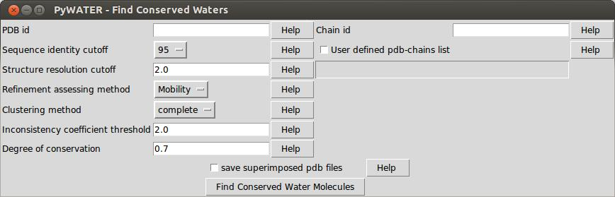

PyWATER finds conserved water molecules in X-ray protein structure.
Important or conserved waters are the water molecules which are present in most or all available pdb structures when superimposed. PyWATER script and this documentation is available at https://github.com/hiteshpatel379/PyWATER. PyMOL is available at http://www.pymol.org/ or http://sourceforge.net/projects/pymol/.
Copyright 2013 Hitesh Patel and B. Gruening
Scipy and Numpy python modules installed on Python 2.7 are required to run PyWATER. PyWATER should be installed as a PyMOL plugin.
- If you start PyMOL with administrator priviliges, PyWATER results and log files will be only accessible by the administrator.
Enabling Plugins in MacPyMOL In order to install plug-ins from inside MacPyMOL, you have to rename the “MacPyMOL.app” to “PyMOLX11Hybrid.app” in your Applications folder, which will start PyMOL in the X Window System (X11) mode (requires an installation of [XQuartz](http://xquartz.macosforge.org/landing/)).
After installation as plugin, PyWATER can be run from PyMOL’s Graphical User Interface, via the commandline or PyMOL’s python API.
Start PyMOL Open PyWATER plugin fromPyMWOLTcl-Tk GUI: Plugin PyWATER Figure 1 shows the snapshot of PyWATER as PyMOL plugin.
Figure 1. Snapshot of PyWATER plugin
Enter required input parameters. PDB and chain identifiers are mandatory. The remaining parameters are optional. Consult table 1 for more details of all input parameters and their default values. Change the default values if desired and click on ‘Find Conserved Water Molecules’
PyWATER [PDB id , Chain id [, sequence identity cutoff [, resolution cutoff [, refinement assessing method [, user defined proteins list [, linkage method [, inconsistency coefficient threshold [, degree of conservation]]]]]]]]
pymol> pywater 4lyw, A, 95
from pymol import cmd
cmd.pywater(PDB id , Chain id [, sequence identity cutoff [, resolution cutoff [, refinement assessing method [, user defined proteins list [, linkage method [, inconsistency coefficient threshold [, degree of conservation]]]]]]])
Table 1: Input parameters and default values
| Value | Default value | Explanation |
|---|---|---|
| PDB ID | – | The PDB identifier of the protein for which you want to find conserved waters. |
| Chain id | – | The chain identifier of the protein for which you want to find conserved water molecules in the above mentioned PDB. |
| Sequence Identity | 95% | The sequence identity cutoff to find similar proteins clustered by BlastClust. |
| Resolution cutoff | 2.0 Å | All the protein structures will be filtered first according to the structure resolution cutoff. Only structures with better resolution than given cutoff will be used further. |
| Refinement assessing method | Mobility | Choose either ‘Mobility’ or ‘Normalized B-factor’ or ‘No refinement’ as criteria to assess the refinement quality of crystal structure. Program will filter out the water molecules with bad refinement quality. |
| Protein List | – | Give a custom list of protein structures to superimpose. Specifying this list will disable ‘sequence identity’ and ‘resolution cutoff’ parameters. |
| Linkage Method | complete | Linkage method for hierarchical clustering. Choose one from single, complete, average. |
| Sequence Identity | 95% | The sequence identity cutoff to find similar proteins clustered by BlastClust. |
| Inconsistency coefficient threshold | 2.0 Å | Any two clusters of water molecules will not be closer than given inconsistency coefficient threshold. Value ranges from 0 to 2.4. |
| degree of conservation | 0.7 | Water molecules will be considered CONSERVED if their probability of being conserved is above given cutoff. Value ranges from 0.4 to 1. |
pyWATER will create a bunch of different output files. The most impartant informations are included in your PyMOL session for visual inspection. A detailed log file, summary files and optionally intermediate files will be stored under your $HOME directory in a folder called PyWATER_outdir. For every run a subfolder with the naming schema PDBid_CHAINid will be created and we recommend to go once through all files to get a feeling of all stored informations. The following list will describe all different result files created by PyWATER:
The query protein structure is saved with all indentified conserved water molecules in PDB file format
A PyMOL session is given with predifend coloring and highlighting the important water molecules
- conserved water molecules, with H-bonds in between them or with protein and/or the ligand are displayed
- all conserved water molecules are colored according to their degree of conservation
A log file pywater.log with all input parameters, program messages, warning and errors
The degree of conservation of each cluster is given in a tabular file with all atom numbers of water molecules from each superimposed pdb structure
We tried hard to output as many information as possible to enable further post-processing steps. For example, user can analyze the surroundings of a water molecule which is conserved in most proteins but not present in some. Rotameric conformations of side chains of nearby residues may result in displacement of water molecule.
Permission is hereby granted, free of charge, to any person obtaining a copy of this software and associated documentation files (the “Software”), to deal in the Software without restriction, including without limitation the rights to use, copy, modify, merge, publish, distribute, sublicense, and/or sell copies of the Software, and to permit persons to whom the Software is furnished to do so, subject to the following conditions:
The above copyright notice and this permission notice shall be included in all copies or substantial portions of the Software.
THE SOFTWARE IS PROVIDED “AS IS”, WITHOUT WARRANTY OF ANY KIND, EXPRESS OR IMPLIED, INCLUDING BUT NOT LIMITED TO THE WARRANTIES OF MERCHANTABILITY, FITNESS FOR A PARTICULAR PURPOSE AND NONINFRINGEMENT. IN NO EVENT SHALL THE AUTHORS OR COPYRIGHT HOLDERS BE LIABLE FOR ANY CLAIM, DAMAGES OR OTHER LIABILITY, WHETHER IN AN ACTION OF CONTRACT, TORT OR OTHERWISE, ARISING FROM, OUT OF OR IN CONNECTION WITH THE SOFTWARE OR THE USE OR OTHER DEALINGS IN THE SOFTWARE.
{kind=link}